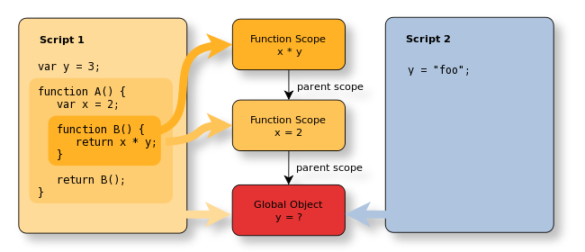
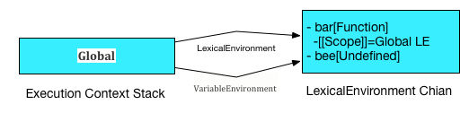
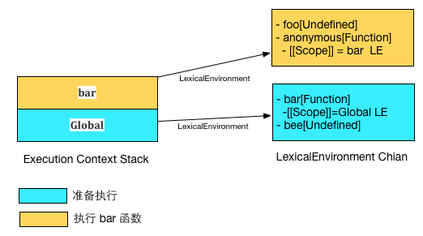
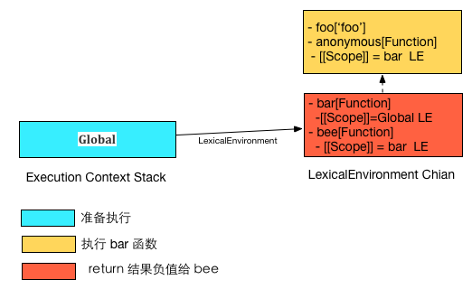
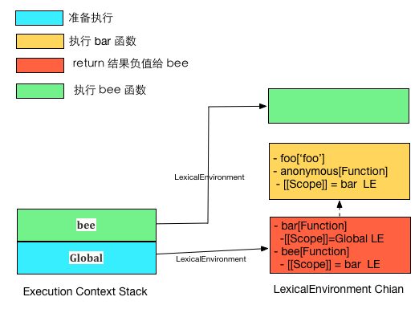

JavaScript 进阶
1. 值（数据结构）
Example
[4] * [4] // 16
[] * [] // 0
[] * {} // NaN
[4, 4] * [4, 4] // NaN
({} * {}) // NaN1.1 类型
| Type | Example |
|---|---|
| Null | null |
| Undefined | undefined |
| Boolean | true |
| Number | 1.1 |
| String | 'JavaScript' |
| Symbol (new in ECMAScript 6) | |
| Object (Object Date Number...) | new Date() |
一切皆对象
5 .toString()JavaScript 对基础类型采用封包的方式
使得可以像对象一样调用方法
除去 null、undefined 之外
Array

1.3 类型转化
1.4 值的传递
基础类型值传递，对象引用传递？
2. 函数
2.3 作用域
是词法作用域

在解析函数表达式时，每个函数对象都包含一个隐变量[[Scope]]
即被解析时所处的执行环境的词法环境。
闭包
闭包无处不在
闭包源自 JavaScript 的词法作用域机制，广义上讲，闭包无处不在。
预编译
执行 bar 函数
结果赋值给 bee
执行 bee 函数
3.4 this this this
一讲到 this 我就热血沸腾